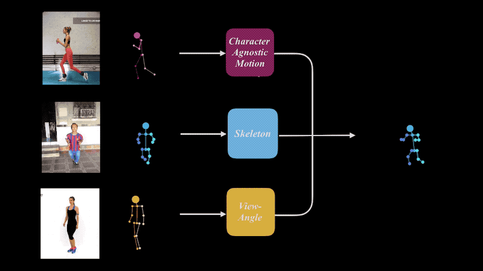
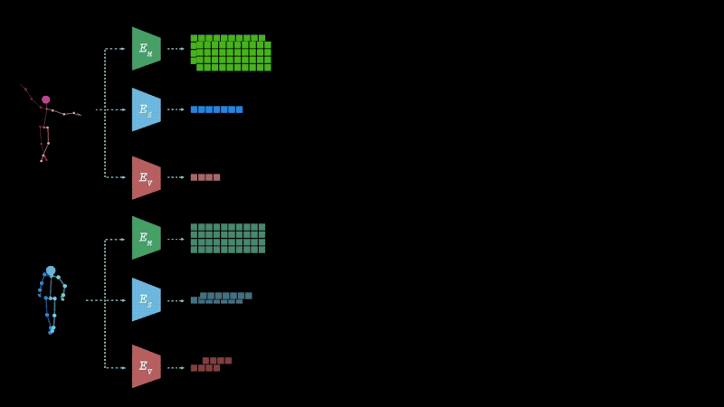
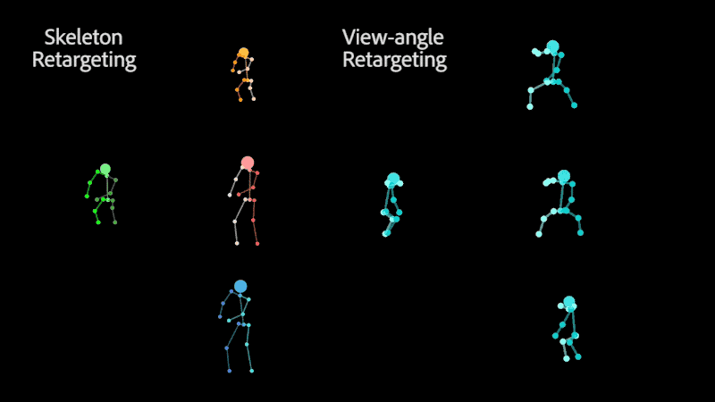
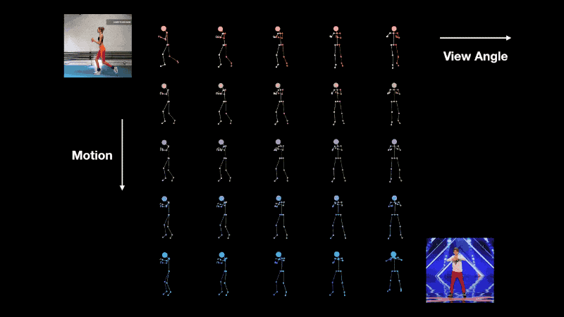
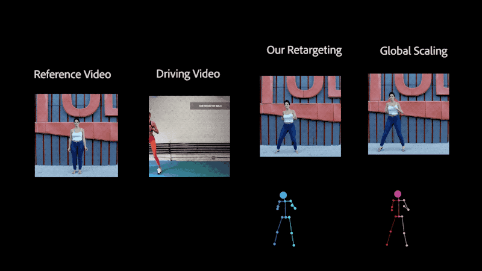
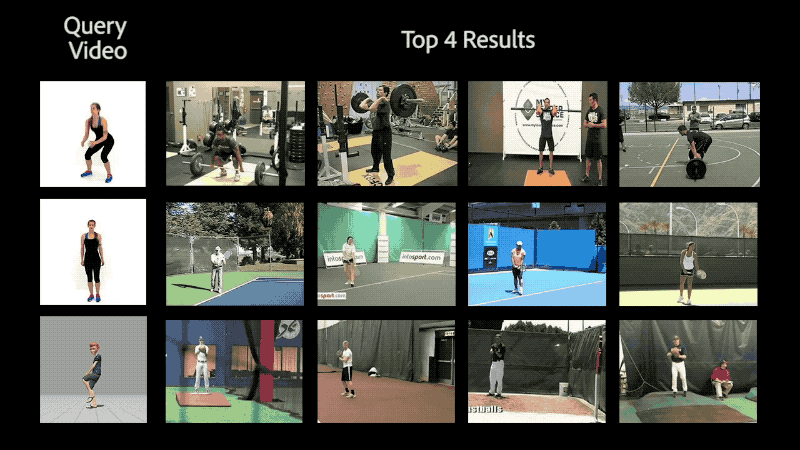

Motion Retargeting in 2D
Our approach is to extract an abstract, character- and camera-agnostic, latent representation of human motion directly from ordinary video. The extracted motion may then be applied to other, possibly very different, skeletons, and/or shown from new viewpoints, which can be extracted as well from other videos.
Decomposing and Re-composing
We train a deep neural network to decompose 2D projections of synthetic 3D data into three latent spaces: motion, skeleton and camera view-angle, which are then shuffled and re-composed to form new combinations.
Skeleton and View-Angle Retargeting
Retargeting of similar motion to various skeletons (left) and different view-angles (right), without the need for 3D reconstruction.
Interpolation
Interpolation of view-angle (horizontal axis) and motion (vertical axis).
Video Performance Cloning
The ability to perform motion retargeting in 2D enables one to use a video-captured performance to drive a novel 2D skeleton, with possibly different proportions. This is done by using recent performance cloning techniques that propose a deep generative networks to produce frames that contain the appearance of a target actor reenacting the motion of a driving actor.
Motion Retrival
Using our motion representation, we can search in a dataset of videos in-the-wild for motions similar to one in a video given as a query, with the search being agnostic to the body proportions of the individual and the camera view angle.